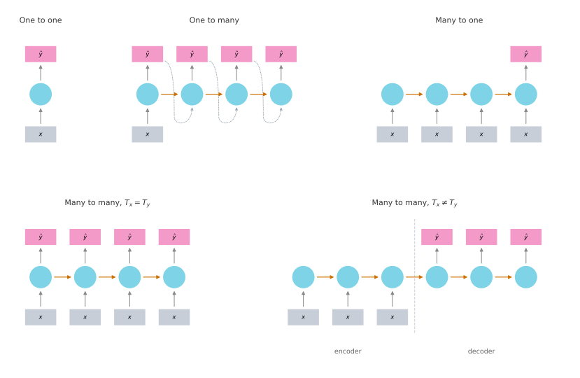
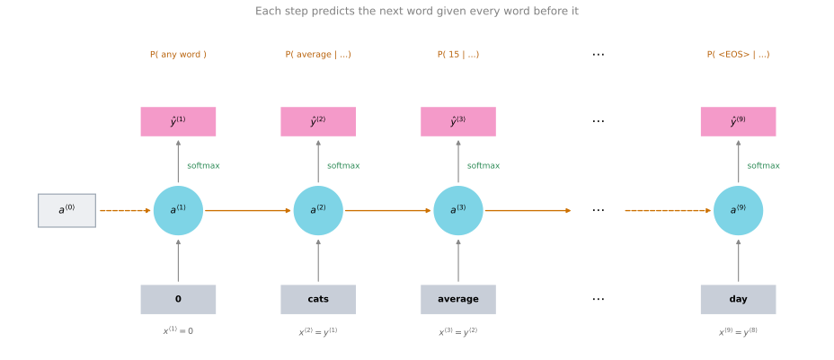
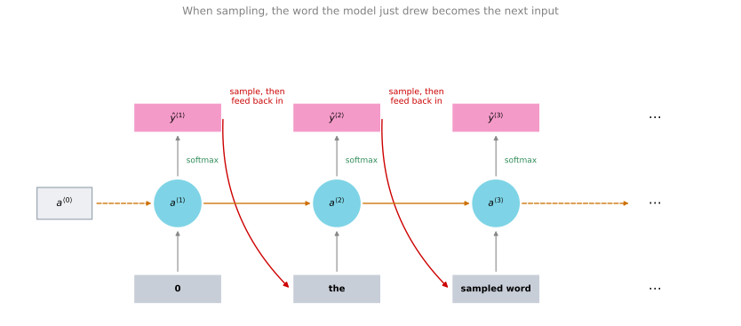

RNN Architectures and Language Models
deep-learning
sequence-models
rnn
nlp
language-model
sampling
The one-to-many, many-to-one, and encoder-decoder shapes an RNN can take, how a language model scores a sentence, and how to sample new text from one.
So far the only RNN you have seen is one where the number of inputs \(T_x\) is equal to the number of outputs \(T_y\). For other applications \(T_x\) and \(T_y\) are not always the same, and there is a much richer family of RNN architectures available.
Different Types of RNNs
Recall the list of applications from the first page, where the input \(x\) and the output \(y\) could be many different types. In music generation, \(T_x\) can be length one or even an empty set. In movie sentiment classification the output \(y\) could be just an integer from 1 to 5 while the input is a sequence. In named entity recognition the input length and the output length are identical. And in machine translation both sides are sequences but with different lengths, because a French sentence and an English sentence can take two different numbers of words to say the same thing.
The basic RNN can be modified to address all of these. The presentation here follows a blog post by Andrej Karpathy titled The Unreasonable Effectiveness of Recurrent Neural Networks (2015).
One to one. This is the least interesting case. There is some input \(x\) and some output \(y\), which is the standard generic neural network covered in the first two courses. You do not need an RNN for this.
One to many. Music generation is the example. The input \(x\) could be an integer telling the network what genre of music you want, or the first note of the piece, and if you do not want to input anything at all then \(x\) could be a null input, a vector of zeros. The network outputs the first value, then with no further inputs outputs the second value, then the third, and so on until it synthesizes the last note of the piece. One technical detail is that when you are actually generating sequences, you often take the first synthesized output and feed it into the next step as well, which is what the dotted arrows show.
Many to one. Sentiment classification is the example. Here \(x\) is a piece of text, such as a movie review saying “There is nothing to like in this movie”, and \(y\) might be a number from 1 to 5, or a 0 or 1 for a negative or positive review. You input the words one at a time, and rather than having an output at every single time step, the RNN reads the entire sentence and outputs \(y\) at the last time step, once it has taken in the whole thing.
Many to many with \(T_x = T_y\). This is the architecture from the previous page, used for named entity recognition, where the input sequence has many inputs and the output sequence has just as many outputs.
Many to many with \(T_x \neq T_y\). For machine translation, the number of words in the input sentence and the number of words in the output sentence can differ. This architecture has two distinct parts. The encoder reads in the sentence, say the French one, and the decoder, having read the sentence, outputs the translation into the other language. Because the reading and the writing are separated, \(T_x\) and \(T_y\) can be different lengths.
There is one further architecture, the attention-based architecture, which is not clearly captured by any of these diagrams. That one comes later in the specialization.
Review Questions
1. Which architecture fits each of these problems, and why? Sentiment classification, music generation, machine translation.
Answer
Sentiment classification is many to one, because a whole sequence of words goes in and a single rating comes out. Music generation is one to many, because the input is a single integer or nothing at all while the output is a sequence of notes. Machine translation is many to many with \(T_x \neq T_y\), because both sides are sequences but a sentence and its translation need not have the same number of words.
1. What are the two parts of the encoder-decoder architecture, and what problem does splitting them solve?
Answer
The encoder reads the whole input sequence without producing any output, and the decoder then produces the output sequence without taking any further input. Splitting them is what lets \(T_x\) and \(T_y\) differ, because the network finishes reading before it starts writing rather than being forced to emit one output per input.
1. In the many-to-one architecture, why is there no output at time steps 1 through \(T_x - 1\)?
Those outputs are computed but discarded
The network only needs one output, so it emits it once the whole sequence has been read
The activations at those steps are set to zero
\(T_y\) must always equal 1 in an RNN
Answer
b. The task produces a single number, so the RNN reads the entire sentence and outputs \(y\) at the last time step, when it has already taken in all of the input. The activations still flow through every step, which is how the earlier words reach that final prediction, so option c is wrong, and \(T_y\) is 1 only for this particular shape.
1. Consider the architecture in which every time step takes an input \(x^{\langle t \rangle}\) and emits an output \(\hat{y}^{\langle t \rangle}\), running from \(x^{\langle 1 \rangle}\) through \(x^{\langle T_x \rangle}\). That architecture is appropriate when \(T_x > T_y\). True or false?
Answer
False. Emitting one output per input forces \(T_y = T_x\), so the shape fits only problems where the two lengths already match, such as named entity recognition. When \(T_x > T_y\) you need something that decouples reading from writing, such as the encoder-decoder, or a many-to-one shape that emits a single output once the whole input has been read.
1. Which pair of tasks could both be addressed by a many-to-one architecture?
Gender recognition from audio, and image classification
Speech recognition, and gender recognition from audio
Gender recognition from audio, and movie review classification
Image classification, and sentiment classification
Answer
c. Both read a whole sequence and emit a single label. Gender recognition takes an audio clip and returns one category, and movie review classification takes a sequence of words and returns one rating. Image classification is not a sequence problem, which rules out a and d, and speech recognition emits a sequence of words rather than one value, which rules out b.
Language Model and Sequence Generation
Language modeling is one of the most basic and important tasks in natural language processing, and one that RNNs do very well.
Suppose you are building a speech recognition system and you hear the sentence “the apple and pear salad was delicious”. What did you just hear? Did the speaker say “the apple and pair salad” or “the apple and pear salad”? You probably think the second is much more likely, and that is what a good speech recognition system would output, even though the two sound exactly the same.
The way a speech recognition system picks the second sentence is by using a language model, which tells it the probability of either sentence. A language model might say that the chance of the first is \(3.2 \times 10^{-13}\) and the chance of the second is \(5.7 \times 10^{-10}\). With those probabilities the second sentence is more likely by a factor of about 1,800, which is why the system picks it.
Given any sentence, the job of a language model is to tell you the probability of that particular sentence. By probability of a sentence, the meaning is this. If you were to pick up a random newspaper, open a random email, pick a random web page, or listen to the next thing someone says, what is the chance that the sentence you encounter is that particular one? This is a fundamental component both for speech recognition and for machine translation systems, where the translation system wants to output only sentences that are likely.
The input to a language model is a sentence written as a sequence \(y^{\langle 1 \rangle}, y^{\langle 2 \rangle}, \ldots, y^{\langle T_y \rangle}\). For a language model it is useful to represent the sentence as outputs \(y\) rather than as inputs \(x\). The model estimates the probability of that particular sequence of words.
Tokenizing the Training Set
To build such a model with an RNN, you first need a training set comprising a large corpus of English text, or text from whatever language you want to model. The word corpus is NLP terminology that just means a large body of sentences.
Say a sentence in your training set is “Cats average 15 hours of sleep a day.”
The first thing to do is tokenize the sentence, which means forming a vocabulary as in the earlier section and then mapping each of these words to one-hot vectors or to indices in your vocabulary.
You might also want to model when sentences end, so a common thing to do is add an extra token called EOS, standing for end of sentence, appended to the end of every sentence in the training set. With the EOS token appended, this example has nine tokens, \(y^{\langle 1 \rangle}\) through \(y^{\langle 9 \rangle}\).
In the tokenization step you can decide whether or not the period should be a token as well. This example ignores punctuation, using day as the last word and omitting the period. If you want to treat the period or other punctuation as an explicit token, you add it to your vocabulary too.
One other detail is what happens when a word in the training set is not in the vocabulary. If your vocabulary holds the 10,000 most common English words, then a word like Mau, a breed of cat, might not be among them. In that case you replace it with the token UNK, standing for unknown word, and model the chance of the unknown word rather than the chance of Mau specifically. With both extra tokens added, a 10,000 word vocabulary becomes a 10,002 way choice at every step.
Building the RNN
Having carried out tokenization, you build an RNN to model the chance of these sequences. The key structural idea is that the input at each step is the previous word of the sentence, so \(x^{\langle t \rangle} = y^{\langle t-1 \rangle}\).

At the first step, \(x^{\langle 1 \rangle}\) is set to a vector of zeros and \(a^{\langle 0 \rangle}\) is set to a vector of zeros by convention. What \(a^{\langle 1 \rangle}\) does is make a softmax prediction of the probability of the first word. It is trying to predict the probability of any word in the dictionary. What is the chance the first word is a, what is the chance it is Aaron, what is the chance it is cats, all the way to what is the chance it is Zulu, or the unknown word token, or the end of sentence token. So \(\hat{y}^{\langle 1 \rangle}\) is a 10,002 way softmax output.
The RNN then steps forward. At the second step its job is to figure out the second word, and it is also given the correct first word. It is told that in reality the first word was cats, which is why \(x^{\langle 2 \rangle} = y^{\langle 1 \rangle}\). The output is again predicted by a softmax over the whole vocabulary, given what came previously. In this example the right answer is average, since the sentence starts with “cats average”.
At the next step you compute \(a^{\langle 3 \rangle}\), and to predict the third word, which is 15, the network is given the first two words. So \(x^{\langle 3 \rangle} = y^{\langle 2 \rangle}\), the word average is the input, and its job is to give the probability of any word in the dictionary given that what came before was “cats average”. This continues until time step nine, where \(x^{\langle 9 \rangle} = y^{\langle 8 \rangle}\), the word day, and \(a^{\langle 9 \rangle}\) has to produce \(\hat{y}^{\langle 9 \rangle}\), which should give a high chance to the EOS token.
Each step in the RNN looks at some set of preceding words and gives the distribution over the next word. The RNN learns to predict one word at a time, going from left to right.
To train the network you define the cost function. At a certain time \(t\), if the true word was \(y^{\langle t \rangle}\) and the network softmax predicted \(\hat{y}^{\langle t \rangle}\), this is the familiar softmax loss, and the overall loss is the sum over all time steps of the losses associated with the individual predictions.
\[\mathcal{L}^{\langle t \rangle}\!\left(\hat{y}^{\langle t \rangle},\, y^{\langle t \rangle}\right) = -\sum_i y_i^{\langle t \rangle} \log \hat{y}_i^{\langle t \rangle}\]
\[\mathcal{L} = \sum_t \mathcal{L}^{\langle t \rangle}\!\left(\hat{y}^{\langle t \rangle},\, y^{\langle t \rangle}\right)\]
Probability of a Sentence
If you train this RNN on a large training set, then given any initial set of words such as “cats average 15” or “cats average 15 hours of”, it can predict the chance of the next word.
Given a new sentence, say \(y^{\langle 1 \rangle}, y^{\langle 2 \rangle}, y^{\langle 3 \rangle}\) with just three words for simplicity, the chance of the entire sentence comes from multiplying three numbers the model already produces. The first softmax gives the chance of \(y^{\langle 1 \rangle}\), the second gives the chance of \(y^{\langle 2 \rangle}\) given \(y^{\langle 1 \rangle}\), and the third gives the chance of \(y^{\langle 3 \rangle}\) given \(y^{\langle 1 \rangle}\) and \(y^{\langle 2 \rangle}\).
\[P\!\left(y^{\langle 1 \rangle}, y^{\langle 2 \rangle}, y^{\langle 3 \rangle}\right) = P\!\left(y^{\langle 1 \rangle}\right) \cdot P\!\left(y^{\langle 2 \rangle} \mid y^{\langle 1 \rangle}\right) \cdot P\!\left(y^{\langle 3 \rangle} \mid y^{\langle 1 \rangle}, y^{\langle 2 \rangle}\right)\]
That is the basic structure of how you train a language model using an RNN.
Review Questions
1. Why is the input at step \(t\) set to \(y^{\langle t-1 \rangle}\) rather than to something computed by the network?
Answer
During training the network is told the correct previous word so that each softmax is predicting the next word given the true history. Step three predicts 15 given that “cats average” actually came before it, not given whatever the model happened to guess at steps one and two. That keeps every step’s prediction problem well posed and independent of the model’s own mistakes.
1. The sentence “Cats average 15 hours of sleep a day” has eight words, but the transcript counts nine outputs. Where does the ninth come from?
Answer
From the EOS token appended to the end of the sentence. The model has to learn where sentences stop, so the ninth step is trained to give a high probability to EOS. The period is not counted here, because this example ignores punctuation rather than treating it as its own token.
1. With a 10,000-word vocabulary, how many outputs does each softmax have in this example, and why?
10,000
10,001
10,002
9, one per word in the sentence
Answer
c. The vocabulary contributes 10,000, and two special tokens are added, UNK for words outside the vocabulary and EOS for the end of the sentence. The softmax is over the vocabulary, not over the sentence, so its size does not depend on how long the sentence is.
1. A model gives \(P(\text{"the apple and pair salad"}) = 3.2 \times 10^{-13}\) and \(P(\text{"the apple and pear salad"}) = 5.7 \times 10^{-10}\). Both sound identical to a speech recognizer. Which does it output, and by what margin?
Answer
It outputs the second one. The ratio is \(5.7 \times 10^{-10} \div 3.2 \times 10^{-13} \approx 1{,}800\), so the second sentence is about three orders of magnitude more likely. Sounding the same is exactly why the acoustic signal cannot settle it and the language model has to.
1. In the training model, at the \(t\)-th time step the RNN is estimating \(P\!\left(y^{\langle t \rangle} \mid y^{\langle 1 \rangle}, y^{\langle 2 \rangle}, \ldots, y^{\langle t-1 \rangle}\right)\). True or false?
Answer
True. Each step is handed the true preceding words as its input and produces a softmax over the vocabulary, so what it estimates is the distribution of the next word given everything that came before it. Multiplying those conditionals across the sequence is exactly how the probability of a whole sentence is obtained.
Sampling Novel Sequences
After you train a sequence model, one of the ways to informally get a sense of what it has learned is to have it sample novel sequences.
A sequence model gives the chance of any particular sequence of words, so what you want to do is sample from that distribution to generate new sequences. The network was trained with the structure shown above, but to sample you do something slightly different.

First you sample the first word you want the model to generate. For that you input the usual \(x^{\langle 1 \rangle} = 0\) and \(a^{\langle 0 \rangle} = 0\), and the first time step gives a softmax probability over all possible outputs. You then randomly sample according to that softmax distribution. The distribution tells you the chance that the word is a, the chance it is Aaron, the chance it is Zulu, the chance it is the unknown word token, and the chance it is the end of sentence token. You take that vector and use, for example, the numpy command np.random.choice to sample according to the distribution it defines, and that gives you the first word.
Next you go on to the second time step. That step is expecting \(y^{\langle 1 \rangle}\) as its input, but what you do instead is take the \(\hat{y}^{\langle 1 \rangle}\) you just sampled and pass that in. So whatever word you chose at the first time step becomes the input at the second position, and the softmax there makes a prediction for \(\hat{y}^{\langle 2 \rangle}\). For example, if the first sampled word happened to be the, which is a very common choice of first word, then you pass the in as \(x^{\langle 2 \rangle}\), and the network gives the chance of each possible second word given that the first word is the. You sample from that, pass the choice on as a one-hot encoding, sample the third word, and keep going to the last time step.
How do you know when the sequence ends? One option is that if the EOS token is part of your vocabulary, you keep sampling until you generate one, and that tells you the sentence has ended. Alternatively, if EOS is not in your vocabulary, you can decide to sample 20 words, or 100 words, and keep going until you reach that number of time steps.
This procedure will sometimes generate an unknown word token. If you want to make sure your algorithm never emits one, you can reject any sample that comes out as UNK and keep resampling from the rest of the vocabulary until you get a word that is not the unknown word. Or you can leave it in the output, if you do not mind an unknown word appearing.
Character-Level Language Models
Everything so far has been a word-level RNN, meaning the vocabulary is words from English. Depending on your application you can also build a character-level RNN. In that case the vocabulary is the alphabet from a to z, plus perhaps the space, punctuation if you wish, and the digits 0 through 9. If you want to distinguish uppercase from lowercase you include the uppercase letters as well. One way to settle it is to look at your training set, see which characters appear there, and use those to define the vocabulary.
With a character-level model the sequence \(y^{\langle 1 \rangle}, y^{\langle 2 \rangle}, y^{\langle 3 \rangle}\) holds the individual characters of your training data rather than the individual words. For the sentence “Cats average 15 hours of sleep a day”, c would be \(y^{\langle 1 \rangle}\), a would be \(y^{\langle 2 \rangle}\), t would be \(y^{\langle 3 \rangle}\), the space would be \(y^{\langle 4 \rangle}\), and so on.
| Word level | Character level | |
|---|---|---|
| Unknown words | Needs an UNK token | Never needed |
Rare words such as mau |
Gets the UNK token if outside the vocabulary | Gets a non-zero probability |
| Sequence length | 10 to 20 tokens for many English sentences | Many dozens of tokens |
| Long-range dependencies | Better | Worse |
| Training cost | Cheaper | More expensive |
The main disadvantage of the character-level model is that you end up with much longer sequences. Many English sentences have 10 to 20 words but many dozens of characters, so character models are not as good at capturing long-range dependencies, meaning how the earlier parts of a sentence affect the later parts. They are also just more computationally expensive to train.
The trend in natural language processing is that for the most part word-level models are still used, but as computers get faster there are more and more applications where people are starting to look at character-level models, at least in some special cases. They tend to be much more computationally expensive to train, so they are not in widespread use today, except in specialized applications where you have to deal with unknown words a lot, or where the vocabulary is specialized.
With these methods you can build an RNN over a corpus of English text, build a word-level or a character-level language model, and sample from what you have trained. A model trained on news articles generates text that looks vaguely like news, while a model trained on Shakespearean text generates something that sounds vaguely Shakespearean. Neither output is quite grammatical, but both reflect the style of the training corpus.
News
President enrique peña nieto, announced sench’s sulk former coming football langston paring.
“I was not at all surprised,” said hich langston.
“Concussion epidemic”, to be examined.
The gray football the told some and this has on the uefa icon, should money as.
Shakespeare
The mortal moon hath her eclipse in love.
And subject of this thou art another this fold.
When besser be my love to me see sabl’s.
For whose are ruse of mine eyes heaves.
Review Questions
1. What is the one structural difference between running the network for training and running it for sampling?
Answer
The input at each step. In training, \(x^{\langle t \rangle}\) is the true previous word \(y^{\langle t-1 \rangle}\) from the training sentence. In sampling there is no true sentence, so \(x^{\langle t \rangle}\) is the word the model itself drew at the previous step, \(\hat{y}^{\langle t-1 \rangle}\). Everything else about the network is identical.
1. Why sample from the softmax with np.random.choice rather than always taking the highest-probability word?
Answer
The point is to generate novel sequences drawn from the distribution the model has learned. Always taking the most likely word would give the same output every time and would not reflect the spread of the distribution, whereas sampling proportionally to the probabilities produces varied text and gives an informal sense of what the model has actually learned.
1. Give one clear advantage and one clear disadvantage of a character-level language model.
Answer
The advantage is that it never has to deal with unknown word tokens, so a rare word such as mau gets a non-zero probability instead of being collapsed into UNK. The disadvantage is that the sequences get much longer, so the model is worse at capturing long-range dependencies and is more expensive to train.
1. How do you decide when a sampled sentence has finished?
Answer
If EOS is part of the vocabulary, you keep sampling until the model emits one. If EOS is not in the vocabulary, you pick a fixed number of steps in advance, such as 20 or 100 words, and stop once you reach it.
1. When sampling a sentence, step \(t\) uses the softmax probabilities to pick the highest-probability word, then passes the ground-truth word from the training set to the next step. True or false?
Answer
False on both counts. The word is drawn at random from the softmax distribution rather than taken as the maximum, which is what makes the generated sentences vary. And there is no ground truth involved, because sampling does not read from a training sentence at all. What passes to the next step is the word the model itself just drew.
With the basic RNN, the language model, and sampling covered, what remains is the difficulty of training RNNs.